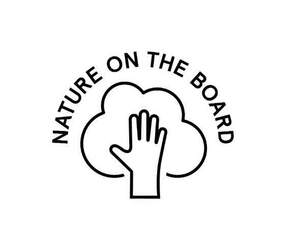

Trade Mark Journal No.2025/029 18 July 2025
UK00004225767 27 June 2025 (3,9,18,21,25,38,41)
Mark 1

Mark 2
- Class 3
- Natural cosmetic skin care products; natural cosmetics; non-medicated preparations and substances for the care, conditioning, toning, firming, moisturising, beautifying and cleansing of the skin, face, eyes, body, hands, feet, legs, hair and scalp; wipes for cosmetic use; wipes impregnated with cleansing preparations; wipes for removing make-up; wipes for toilet use; hair preparations and substances; shampoos and conditioners for the hair; shampoos for pets [non-medicated grooming preparations]; animal grooming preparations; soaps, bath and shower preparations and substances; creams and lotions for the skin; deodorants; perfumery; essential oils; washing, cleaning and scouring preparations; detergents; laundry preparations and substances; fabric conditioners; dishwasher cleaning and rinse aid preparations and substances; toilet cleaners; scented room sprays; room fragrancing products; household cleaning and polishing preparations; washing up liquid; aromatherapy oils and substances; wipes of paper impregnated with make-up remover; wipes of paper impregnated with cleansing preparations and substances; refills for hand soap dispensers; refills for shampoo dispensers; refills for shower gel dispensers; refills for cosmetics dispensers; refills for room fragrance dispensers; refills for body cleansing product dispensers; refills for laundry preparations and substances; refills for washing up liquid.
- Class 9
- Media content; electronic publications, downloadable; downloadable computer and mobile applications for downloading and reading electronic publications on electronic devices; computer application software for distributing electronic media content via the internet; apparatus and instruments for recording, transmitting, reproducing or processing sound, images or data; recorded and downloadable media; computer software; covers and cases for mobile phones; parts and fittings for all the aforesaid goods.
- Class 18
- Bags; travelling bags, toiletries bags, cosmetics bags and make-up bags.
- Class 21
- Household fabric cleaning wipes; cleaning brushes and swabs for household use; household or kitchen utensils and containers; combs and sponges; brushes (except paint brushes); brush-making materials; articles for cleaning purposes; steel wool; unworked or semi-worked glass (except glass used in building); glassware, porcelain and earthenware; wash bags.
- Class 25
- Clothing, footwear, and headwear; socks; gloves.
- Class 38
- On-line transmission of electronic publications; communication by online blogs; transmission of videos, movies, pictures, images, text, photos, games, user-generated content, audio content, and information via the Internet; provision of online forums for users for the sharing and transmission of information and electronic media concerning environmental matters; providing an online interactive bulletin board; providing access to multimedia content online; providing online facilities for real-time interaction with other computer users; providing user access to a website containing information on a wide range of topics; information, advisory and consultancy services relating to the aforesaid.
- Class 41
- Providing on-line electronic publications [not downloadable]; publication of multimedia material online; provision of audio and visual media via communications networks; provision of entertainment services; provision of educational information; publishing, reporting, and writing of texts and articles; online publications, namely blogs; providing information, commentary, articles training and advice on environmental matters via computer networks; publishing of newsletters; information, advisory and consultancy services relating to the aforesaid.
Faith In Nature Limited
Representative: HGF Limited